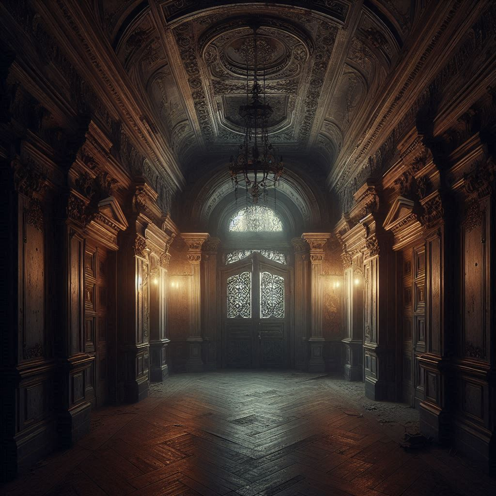
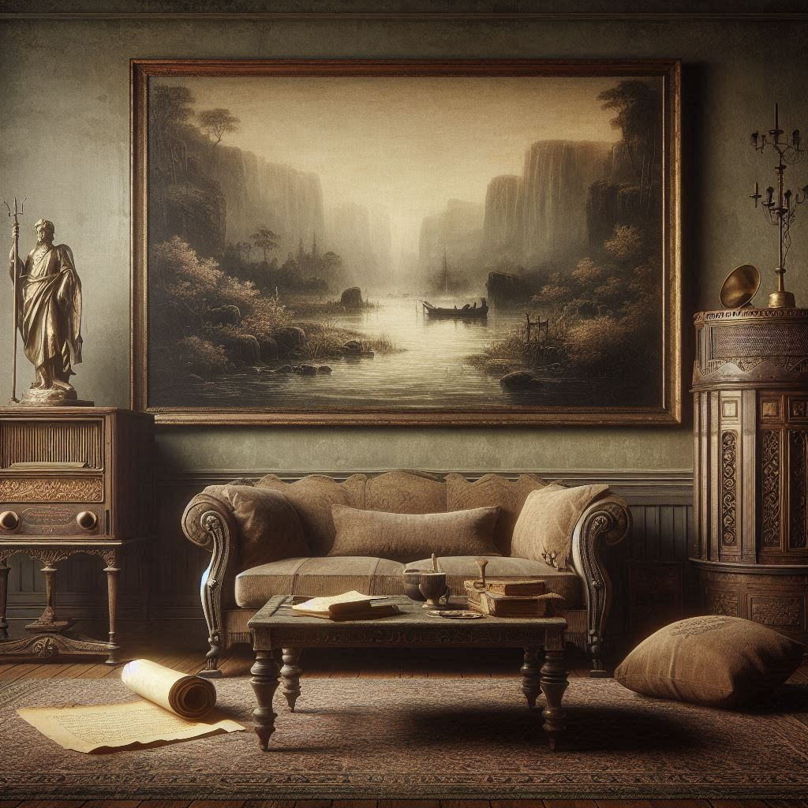
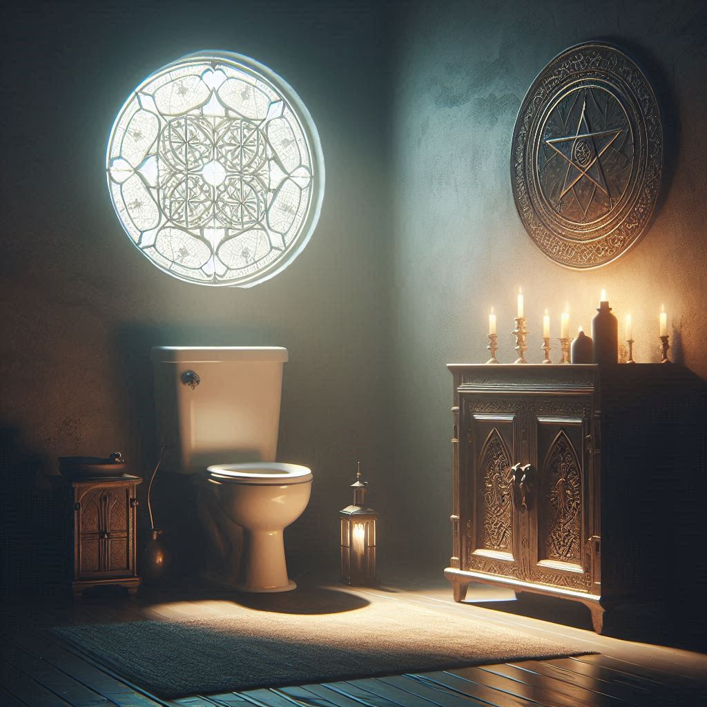
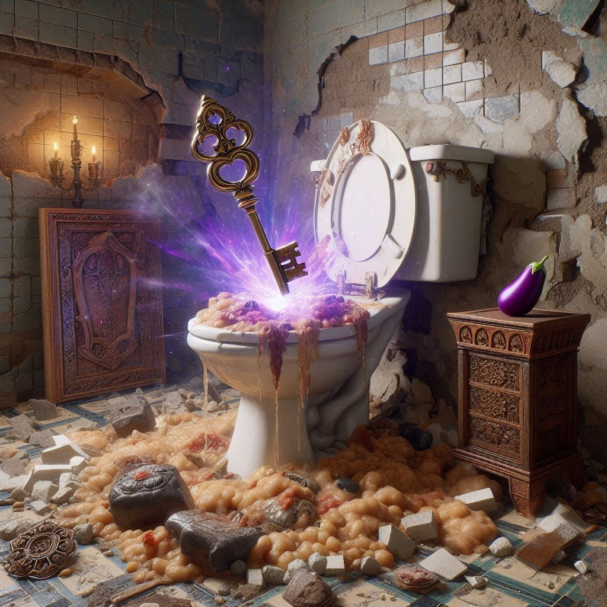

<!DOCTYPE html>
<html lang="de">
<head>
  <meta charset="UTF-8" />
  <meta name="viewport" content="width=device-width, initial-scale=1.0" />
  <title>Ober-Gine – Das vergessene Erwachen</title>
  <style>
    /* Responsives, einfaches Design */
    body {
      font-family: Arial, sans-serif;
      background: #f5f5f5;
      margin: 0;
      padding: 0;
      line-height: 1.6;
      color: #333;
    }
    #gameContainer {
      max-width: 600px;
      margin: 2rem auto;
      background: #fff;
      padding: 1.5rem;
      border-radius: 8px;
      box-shadow: 0 2px 5px rgba(0,0,0,0.3);
    }
    .option-button {
      display: block;
      width: 100%;
      padding: 10px;
      margin: 0.5rem 0;
      font-size: 1rem;
      border: none;
      border-radius: 5px;
      background: #0066cc;
      color: #fff;
      cursor: pointer;
    }
    .option-button:hover {
      background-color: #0055aa;
    }
    .warning {
      color: #b00;
      font-weight: bold;
    }
    .narrative img {
      width: 100%;
      border-radius: 8px;
      margin-bottom: 1rem;
    }
    .narrative {
      margin-bottom: 1.5rem;
    }
  </style>
</head>
<body>
  <div id="gameContainer"></div>
  <script>
    /* ------------------------------
       Globale Spielzustände und Variablen
       ------------------------------ */
    let gameState = {
      currentRoom: "schlafzimmer",  // Spielstart im Schlafzimmer
      einlaufTaken: false,          // Wurde in der Küche das rituelle Einlaufset gefunden und mitgenommen?
      einlaufUsed: false,           // Wurde der Einlauf im Badezimmer eingeführt?
      aubergine: "none",            // Mögliche Zustände: "none", "taken" oder "cut"
      auberginePlaced: false,       // Wurde die heilige Aubergine am Altar im Badezimmer platziert?
      prayerSequence: [],           // Auswahl der Gebetsfragmente beim Toiletten‑Gebet
      keyFound: false,              // Schlüssel zum Verlassen der Wohnung gefunden?
      gameOver: false
    };

    /* Versteckte Verse (für das Toiletten‑Gebet) – die korrekte Reihenfolge:
         1. "Reinige deinen Geist"     (auf der Schriftrolle im Wohnzimmer)
         2. "Öffne dein Herz"           (auf der Rückseite des Amuletts im Schlafzimmer)
         3. "Erhebe deinen Körper"      (auf der Rückseite des Schneidebretts in der Küche)
         4. "Empfange die Erleuchtung"   (durch leises Zuhören am Radio im Wohnzimmer)
       Diese Verse werden in discoveredVerses gesammelt, sobald der Spieler sie entdeckt.
    */
    let discoveredVerses = [];
    const correctPrayerOrder = [
      "Reinige deinen Geist",
      "Öffne dein Herz",
      "Erhebe deinen Körper",
      "Empfange die Erleuchtung"
    ];

    const gameContainer = document.getElementById("gameContainer");

    // Hilfsfunktion: Anzeige von Narration und Optionen
    function displayScene(narrative, options) {
      gameContainer.innerHTML = `<div class="narrative">${narrative}</div>`;
      options.forEach(opt => {
        const button = document.createElement("button");
        button.className = "option-button";
        button.textContent = opt.text;
        button.onclick = opt.action;
        gameContainer.appendChild(button);
      });
    }

    // Game-Over-Funktion
    function gameOver(message) {
      gameState.gameOver = true;
      displayScene(`<p class="warning">${message}</p><p>GAME OVER</p>`, [
        { text: "Neustarten", action: () => location.reload() }
      ]);
    }

    /* ------------------------------
       Raumfunktionen und Navigation
       ------------------------------ */

    // Schlafzimmer – Spielstart
    function showSchlafzimmer() {
      gameState.currentRoom = "schlafzimmer";
      let narrative = `
        <h2>Schlafzimmer</h2>
        
        <p>Du erwachst in deinem Schlafzimmer – alles wirkt vertraut, aber etwas stimmt nicht. Du fühlst dich unbehaglich verstopft. Auf dem zerknitterten Nachttisch liegen ein einfacher Zettel und ein kunstvoll gestaltetes Amulett. Ein alter Spiegel hängt an der Wand.</p>
      `;
      let options = [
        { text: "Untersuche den Nachttisch", action: () => { 
            alert("Reingung des Darms ist der erste Schritt zur Erleuchtung. Du verspürst eine drückende Verstopfung."); 
            showSchlafzimmer(); 
          } 
        },
        { text: "Untersuche den Spiegel", action: showSchlafzimmerSpiegel },
        { text: "Öffne den Kleiderschrank", action: showSchlafzimmerCloset },
        { text: "Untersuche das Amulett", action: showSchlafzimmerAmulett },
        { text: "Zurück in den Hauptflur", action: showFlur }
      ];
      displayScene(narrative, options);
    }
    // Schlafzimmer – Spiegel interagieren
    function showSchlafzimmerSpiegel() {
      alert("Im Spiegel erkennst du einen flüchtigen Blick: Eine vage Szene, in der Menschen in ritueller Kleidung an einem Fluss versammelt sind – ein erster Hinweis auf ein altes Ritual.");
      showSchlafzimmer();
    }
    // Schlafzimmer – Kleiderschrank (tödliche Option)
    function showSchlafzimmerCloset() {
      let narrative = `
        <h2>Schlafzimmer – Kleiderschrank</h2>
        
        <p>Du öffnest den alten Kleiderschrank – plötzlich schwingt sich ein furchterregendes Monster hervor, das dich hineinzerrt und zerfleischt.</p>
      `;
      displayScene(narrative, [
        { text: "GAME OVER", action: () => gameOver("Das Monster im Schrank hat dich zerfleischt!") }
      ]);
    }
    // Schlafzimmer – Amulett (mehrstufige Untersuchung)
    function showSchlafzimmerAmulett() {
      let narrative = `
        <h2>Schlafzimmer – Amulett</h2>
        
        <p>Du hältst das alte, verzierte Amulett in der Hand. Was möchtest du tun?</p>
      `;
      let options = [
        { text: "Sieh dir die Vorderseite an", action: () => { alert("Die Vorderseite zeigt nur ein unscheinbares Muster."); showSchlafzimmerAmulett(); } },
        { text: "Dreh das Amulett um", action: revealAmulettVerse }
      ];
      options.push({ text: "Zurück ins Schlafzimmer", action: showSchlafzimmer });
      displayScene(narrative, options);
    }
    function revealAmulettVerse() {
      let narrative = `
        <h2>Schlafzimmer – Amulett (Rückseite)</h2>
        
        <p>Auf der Rückseite des Amuletts entdeckst du den Vers: "Öffne dein Herz".</p>
      `;
      if (!discoveredVerses.includes("Öffne dein Herz")) {
        discoveredVerses.push("Öffne dein Herz");
        alert("Du hast den Vers 'Öffne dein Herz' entdeckt!");
      } else {
        alert("Diesen Vers hast du bereits gefunden.");
      }
      showSchlafzimmer();
    }

    // Hauptflur – Zentrale Navigation (Haustür stets sichtbar)
    function showFlur() {
      gameState.currentRoom = "flur";
      let narrative = `
        <h2>Hauptflur</h2>
        
        <p>Du befindest dich in einem langen Flur, von dem aus du zu allen Räumen gelangst: Schlafzimmer, Wohnzimmer, Küche und Badezimmer.
        Die Haustür ist stets sichtbar – sie bleibt verschlossen, bis du den Schlüssel findest. ${gameState.keyFound ? " (Schlüssel vorhanden!)" : ""}</p>
      `;
      let options = [
        { text: "Gehe ins Schlafzimmer", action: showSchlafzimmer },
        { text: "Gehe ins Wohnzimmer", action: showWohnzimmer },
        { text: "Gehe in die Küche", action: showKueche },
        { text: "Gehe ins Badezimmer", action: showBadezimmer },
        { 
          text: "Haustür", 
          action: () => {
            if (gameState.keyFound) {
              showDoorExit();
            } else {
              alert("Die Haustür bleibt verschlossen – du brauchst den Schlüssel.");
              showFlur();
            }
          }
        }
      ];
      displayScene(narrative, options);
    }

    // Wohnzimmer – Mehrstufige Interaktionen
    function showWohnzimmer() {
      gameState.currentRoom = "wohnzimmer";
      let narrative = `
        <h2>Wohnzimmer</h2>
        
        <p>Ein antikes Wohnzimmer mit schweren Möbeln, einem beeindruckenden Gemälde des Flusses Hamme und einem alten Couchtisch.
        Auf dem Tisch liegt eine alte Schriftrolle, und in der Ecke steht ein verstaubtes Radio.</p>
      `;
      let options = [
        { text: "Untersuche die Schriftrolle", action: showSchriftrolle },
        { text: "Untersuche das Radio", action: showRadio },
        { text: "Zurück in den Hauptflur", action: showFlur }
      ];
      displayScene(narrative, options);
    }
    // Wohnzimmer – Schriftrolle (Mehrstufige Untersuchung, enthüllt Vers 1)
    function showSchriftrolle() {
      let narrative = `
        <h2>Wohnzimmer – Schriftrolle</h2>
        
        <p>Die alte Schriftrolle liegt auf dem Tisch. Was möchtest du tun?</p>
      `;
      let options = [
        { text: "Lies den Text der Schriftrolle", action: revealSchriftrolleVerse },
        { text: "Untersuche die Rückseite", action: () => { alert("Die Rückseite zeigt verblasste, unleserliche Zeichen."); showWohnzimmer(); } }
      ];
      options.push({ text: "Zurück ins Wohnzimmer", action: showWohnzimmer });
      displayScene(narrative, options);
    }
    function revealSchriftrolleVerse() {
      let narrative = `
        <h2>Wohnzimmer – Schriftrolle (Text)</h2>
        
        <p>Die Schriftrolle verkündet: "Reinige deinen Geist".</p>
      `;
      if (!discoveredVerses.includes("Reinige deinen Geist")) {
        discoveredVerses.push("Reinige deinen Geist");
        alert("Du hast den Vers 'Reinige deinen Geist' entdeckt!");
      } else {
        alert("Diesen Vers hast du bereits gefunden.");
      }
      showWohnzimmer();
    }
    // Wohnzimmer – Radio (Mehrstufige Optionen, enthüllt Vers 4)
    function showRadio() {
      let narrative = `
        <h2>Wohnzimmer – Radio</h2>
        
        <p>Das alte Radio steht in der Ecke. Was möchtest du tun?</p>
      `;
      let options = [
        { text: "Höre leise zu", action: revealRadioVerse },
        { text: "Schalte es laut ein", action: () => { gameOver("Das Radio explodiert und tötet dich!"); } }
      ];
      options.push({ text: "Zurück ins Wohnzimmer", action: showWohnzimmer });
      displayScene(narrative, options);
    }
    function revealRadioVerse() {
      let narrative = `
        <h2>Wohnzimmer – Radio (Leises Zuhören)</h2>
        
        <p>Eine mystische Stimme flüstert: "Empfange die Erleuchtung".</p>
      `;
      if (!discoveredVerses.includes("Empfange die Erleuchtung")) {
        discoveredVerses.push("Empfange die Erleuchtung");
        alert("Du hast den Vers 'Empfange die Erleuchtung' entdeckt!");
      } else {
        alert("Diesen Vers hast du bereits gefunden.");
      }
      showWohnzimmer();
    }

    // Küche – Mehrstufige Aktionen
    function showKueche() {
      gameState.currentRoom = "kueche";
      let narrative = `
        <h2>Küche</h2>
        
        <p>Die alte Küche birgt viele Geheimnisse: Hier kannst du die Schubladen eines Schranks öffnen oder das Schneidebrett mit Auberginen genauer untersuchen.</p>
      `;
      let options = [
        { text: "Öffne die Schubladen", action: kuecheOpenDrawer },
        { text: "Untersuche das Schneidebrett", action: kuecheInspectChoppingBoard },
        { text: "Zurück in den Hauptflur", action: showFlur }
      ];
      displayScene(narrative, options);
    }
    // Küche – Schubladen (Finde rituelles Einlaufset)
    function kuecheOpenDrawer() {
      let narrative = `
        <h2>Küche – Schubladen</h2>
        
        <p>Beim Öffnen der alten Schubladen entdeckst du ein rituelles Einlaufset, das zur Reinigung benötigt wird.</p>
      `;
      let options = [
        { text: "Nimm das Einlaufset mit", action: () => { 
            gameState.einlaufTaken = true;
            alert("Du hast das rituelle Einlaufset mitgenommen.");
            showKueche();
          } 
        },
        { text: "Zurück in die Küche", action: showKueche }
      ];
      displayScene(narrative, options);
    }
    // Küche – Schneidebrett (Mehrstufige Untersuchung der Auberginen)
    function kuecheInspectChoppingBoard() {
      let narrative = `
        <h2>Küche – Schneidebrett</h2>
        
        <p>Auf dem Schneidebrett liegen mehrere Auberginen. Was möchtest du tun?</p>
      `;
      let options = [
        { text: "Betrachte die Auberginen", action: () => { 
            alert("Die Auberginen leuchten geheimnisvoll – doch irgendetwas fehlt.");
            kuecheInspectChoppingBoard();
          }
        },
        { text: "Untersuche die Rückseite des Schneidebretts", action: revealChoppingBoardVerse },
        { text: "Nimm eine heilige Aubergine mit", action: () => {
                if(gameState.aubergine === "none") { 
                  gameState.aubergine = "taken";
                  alert("Du hast die heilige Aubergine vorsichtig aufgehoben.");
                } else { 
                  alert("Du besitzt bereits eine Aubergine.");
                }
                showKueche();
          }
        },
        { text: "Zerschneide die heilige Aubergine", action: () => {
                gameState.aubergine = "cut";
                let fatalNarrative = `
                  <h2>Fataler Moment</h2>
                  
                  <p>Kaum schneidest du die heilige Aubergine an, bricht ein blendendes Licht hervor und saugt dir deine gesamte Lebenskraft aus!</p>
                `;
                displayScene(fatalNarrative, [
                  { text: "GAME OVER", action: () => gameOver("Die heilige Aubergine hat dich getötet!") }
                ]);
          }
        }
      ];
      options.push({ text: "Zurück in die Küche", action: showKueche });
      displayScene(narrative, options);
    }
    function revealChoppingBoardVerse() {
      let narrative = `
        <h2>Küche – Schneidebrett (Rückseite)</h2>
        
        <p>Hinter den Gebrauchsspuren findest du Gravuren, die andeuten: Erhebe deinen Körper.</p>
      `;
      if (!discoveredVerses.includes("Erhebe deinen Körper")) {
        discoveredVerses.push("Erhebe deinen Körper");
        alert("Du hast den Vers 'Erhebe deinen Körper' entdeckt!");
      } else {
        alert("Diesen Vers hast du bereits gefunden.");
      }
      showKueche();
    }

    // Badezimmer – Enthält Altar und rituelle Optionen (ohne Klo-Perspektive)
    function showBadezimmer() {
      gameState.currentRoom = "badezimmer";
      let narrative = `
        <h2>Badezimmer</h2>
        
        <p>Das Badezimmer wirkt schlicht und mystisch. Eine antike Toilette und ein kleiner, alter Altar dominieren den Raum.</p>
      `;
      let options = [
        { text: "Untersuche den Altar", action: showBadezimmerAltar },
        (gameState.einlaufTaken && !gameState.einlaufUsed)
          ? { text: "Führe den rituellen Einlauf ein", action: showBadezimmerEinlauf }
          : { text: "Führe den rituellen Einlauf ein – (Einlaufset fehlt oder bereits genutzt)", action: () => { alert("Du kannst den Einlauf nicht erneut durchführen."); showBadezimmer(); } },
        { text: "Starte das Toiletten‑Gebet", action: startToilettenGebet },
        { text: "Zurück in den Hauptflur", action: showFlur }
      ];
      displayScene(narrative, options);
    }
    // Badezimmer – Altar (Aubergine platzieren)
    function showBadezimmerAltar() {
      let narrative = `
        <h2>Badezimmer – Altar</h2>
        
        <p>Der kleine Altar strahlt uralte Mystik aus. Was möchtest du tun?</p>
      `;
      let options = [];
      if (gameState.aubergine !== "taken") {
        options.push({ text: "Untersuche den Altar", action: () => { alert("Der Altar wirkt unvollständig – dir fehlt wohl die heilige Aubergine."); showBadezimmer(); } });
      } else if (gameState.aubergine === "taken" && !gameState.auberginePlaced) {
        options.push({ text: "Platziere die heilige Aubergine", action: () => { 
            gameState.auberginePlaced = true;
            alert("Du hast die heilige Aubergine am Altar platziert. Der Altar beginnt zu leuchten.");
            showBadezimmer();
          }
        });
      } else if (gameState.aubergine === "taken" && gameState.auberginePlaced) {
        options.push({ text: "Untersuche den leuchtenden Altar", action: () => { alert("Der Altar pulsiert vor ritueller Kraft."); showBadezimmer(); } });
      }
      options.push({ text: "Zurück ins Badezimmer", action: showBadezimmer });
      displayScene(narrative, options);
    }
    // Badezimmer – Ritueller Einlauf (Einbau des Einlaufsets)
    function showBadezimmerEinlauf() {
      let narrative = `
        <h2>Badezimmer – Ritueller Einlauf</h2>
        
        <p>Du führst das rituelle Einlaufset ein, und eine reinigende Kraft durchströmt deinen Körper.</p>
      `;
      if (gameState.einlaufTaken && !gameState.einlaufUsed) {
        gameState.einlaufUsed = true;
        alert("Der Einlauf wurde erfolgreich durchgeführt.");
        displayScene(narrative, [
          { text: "Weiter im Badezimmer", action: showBadezimmer }
        ]);
      } else {
        displayScene(narrative, [
          { text: "Einlauf bereits eingeführt", action: showBadezimmer },
          { text: "Zurück ins Badezimmer", action: showBadezimmer }
        ]);
      }
    }

    // Toiletten‑Gebet starten – Voraussetzungen: Einlauf eingeführt und Aubergine am Altar
    function startToilettenGebet() {
      if (!gameState.einlaufUsed || !gameState.auberginePlaced) {
        alert("Du bist noch nicht bereit für das Toiletten‑Gebet – es fehlen wichtige Utensilien.");
        return showBadezimmer();
      }
      let narrative = `
        <h2>Badezimmer – Das Toiletten‑Gebet</h2>
        
        <p>Vor der antiken Toilette erscheinen vier leuchtende Fragmente eines uralten Gebets:</p>
        <ol>
          <li>"Reinige deinen Geist"</li>
          <li>"Öffne dein Herz"</li>
          <li>"Erhebe deinen Körper"</li>
          <li>"Empfange die Erleuchtung"</li>
        </ol>
        <p>Ordne die Fragmente in die richtige Reihenfolge.</p>
      `;
      // Reset prayer sequence bei Start
      gameState.prayerSequence = [];
      displayPrayerOptionsCustom(narrative);
    }
    // Angepasste Funktion für das Toiletten‑Gebet-Minigame, die die Auswahl beibehält
    function displayPrayerOptionsCustom(narrative) {
      let currentSelection = gameState.prayerSequence.join(" | ");
      let narrativeWithStatus = narrative + `<p><strong>Auswahl bisher:</strong> ${currentSelection}</p>`;
      const fragments = [
        "Reinige deinen Geist",
        "Öffne dein Herz",
        "Erhebe deinen Körper",
        "Empfange die Erleuchtung"
      ];
      const options = fragments.map(frag => {
        return { text: frag, action: () => addPrayerFragmentCustom(frag, narrative) };
      });
      options.push({ text: "Reset Gebetsfolge", action: () => { gameState.prayerSequence = []; displayPrayerOptionsCustom(narrative); } });
      options.push({ text: "Abbrechen – zurück in den Hauptflur", action: () => { gameState.prayerSequence = []; showFlur(); } });
      displayScene(narrativeWithStatus, options);
    }
    function addPrayerFragmentCustom(fragment, narrative) {
      if (gameState.prayerSequence.includes(fragment)) {
        alert("Dieses Fragment hast du bereits gewählt.");
        return;
      }
      gameState.prayerSequence.push(fragment);
      if (gameState.prayerSequence.length === 4) {
        let correct = true;
        for (let i = 0; i < 4; i++) {
          if (gameState.prayerSequence[i] !== correctPrayerOrder[i]) {
            correct = false;
            break;
          }
        }
        if (correct) {
          showPrayerSuccess();
        } else {
          gameOver("Die Toilette erstrahlt in dunklem, auberginenfarbenem Licht und saugt dich qualvoll hinein!");
        }
      } else {
         displayPrayerOptionsCustom(narrative);
      }
    }
    // Erfolgreiches Gebet – humorvolle Beschreibung, Schlüssel erhalten und Übergang zur Schlüssel-Seite
    function showPrayerSuccess() {
      gameState.keyFound = true; // Schlüssel wird nun erhalten
      let narrative = `
        <h2>Erfolgreiches Toiletten‑Gebet</h2>
        <p>Du rezitierst das Gebet: "Reinige deinen Geist, Öffne dein Herz, Erhebe deinen Körper, Empfange die Erleuchtung".<br>
           Mit jedem Wort entleerst du deinen Darm auf eine amüsant prächtige Weise – ein ekstatischer Moment der Erleichterung und Reinigung.</p>
      `;
      displayScene(narrative, [
        { text: "Weiter", action: showSchluesselPage }
      ]);
    }
    // Schlüssel-Seite – Bild und Hinweis, dass der Schlüssel erschienen ist
    function showSchluesselPage() {
      let narrative = `
        <h2>Schlüssel Erscheint</h2>
        
        <p>Durch dein erfolgreiches Gebet hat sich ein schimmernder Schlüssel materialisiert – als hätte deine Erleuchtung das Unmögliche möglich gemacht.</p>
      `;
      displayScene(narrative, [
        { text: "Zurück in den Hauptflur", action: showFlur }
      ]);
    }

    // Haustür im Flur – Mit Schlüssel erhält der Spieler freien Durchgang, der jetzt zu weiteren Erinnerungsseiten führt.
    function showDoorExit() {
      // Nach erfolgreichem Gebet und Schlüssel-Erhalt startet die Erinnerung.
      showMemoryRecall1();
    }
    // Erinnerung: Mehrere Seiten, in denen dein Gedächtnis zurückkehrt
    function showMemoryRecall1() {
      let narrative = `
        <h2>Erinnerung kehrt zurück – Teil 1</h2>
        <p>Du trittst durch die Haustür, die nun offen steht, und spürst den warmen Hauch der Freiheit. Langsam kehren Erinnerungen zurück: Du erinnerst dich, wie du dich auf diesen Tag vorbereitet hast, um die Verstopfung zu erreichen.</p>
      `;
      displayScene(narrative, [
        { text: "Weiter", action: showMemoryRecall2 }
      ]);
    }
    function showMemoryRecall2() {
      let narrative = `
        <h2>Erinnerung kehrt zurück – Teil 2</h2>
        <p>Stück für Stück fließen Erinnerungen in deinen Geist: die geheimen Rituale, die Fastenzeiten und die Speisen, die dich in diesen Zustand der Verstopfung geführt haben.</p>
      `;
      displayScene(narrative, [
        { text: "Weiter", action: showMemoryRecall3 }
      ]);
    }
    function showMemoryRecall3() {
      let narrative = `
        <h2>Erinnerung kehrt zurück – Teil 3</h2>
        <p>Mit jedem Schritt kehrt dein Gedächtnis zurück: Du erinnerst dich, wie sorgfältig du diesen Zustand geplant hast, um das Gebet und das Ritual zu meistern.</p>
      `;
      displayScene(narrative, [
        { text: "Weiter", action: showFlussHamme }
      ]);
    }
    
    // Fluss Hamme – Das große Ritual draußen (Finale Seite)
    function showFlussHamme() {
      gameState.currentRoom = "fluss";
      let narrative = `
        <h2>Fluss Hamme – Das große Ritual</h2>
        
        <p>Du trittst ins Freie und erreichst den Fluss Hamme. Dort versammeln sich die Anhänger der Ober‑Gine, um in einem ekstatischen Ritual gemeinsam Erleuchtung zu finden – schließlich kackt ihr alle fröhlich zusammen in die Hamme, ein feierlicher Akt der Gemeinschaft und Erneuerung.</p>
      `;
      displayScene(narrative, [
        { text: "Spiel beenden (Neustart)", action: () => location.reload() }
      ]);
    }

    // Spielstart: Beginne im Schlafzimmer
    showSchlafzimmer();
  </script>
</body>
</html>
